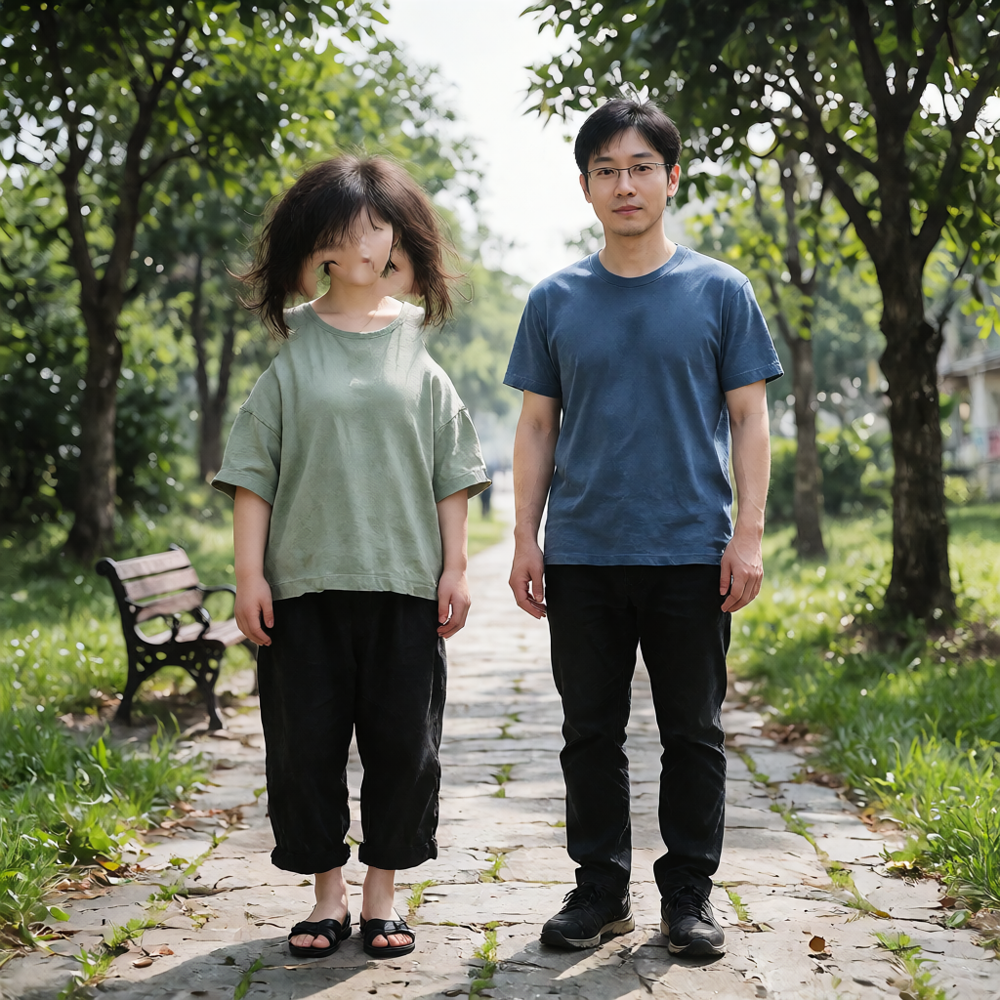
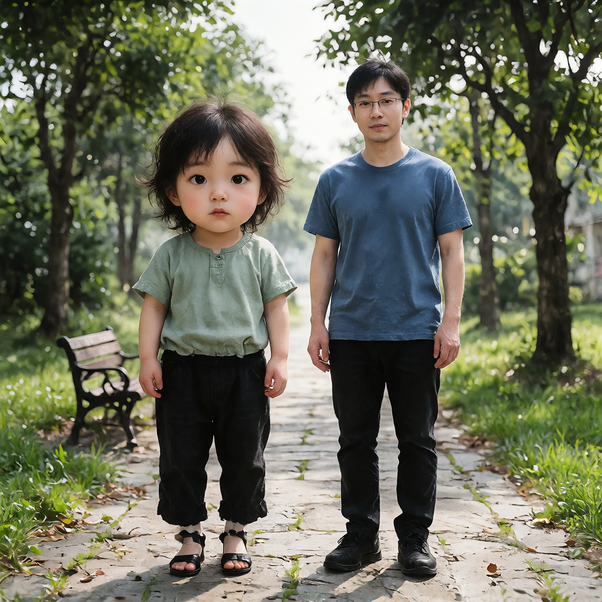
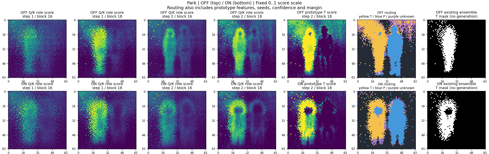
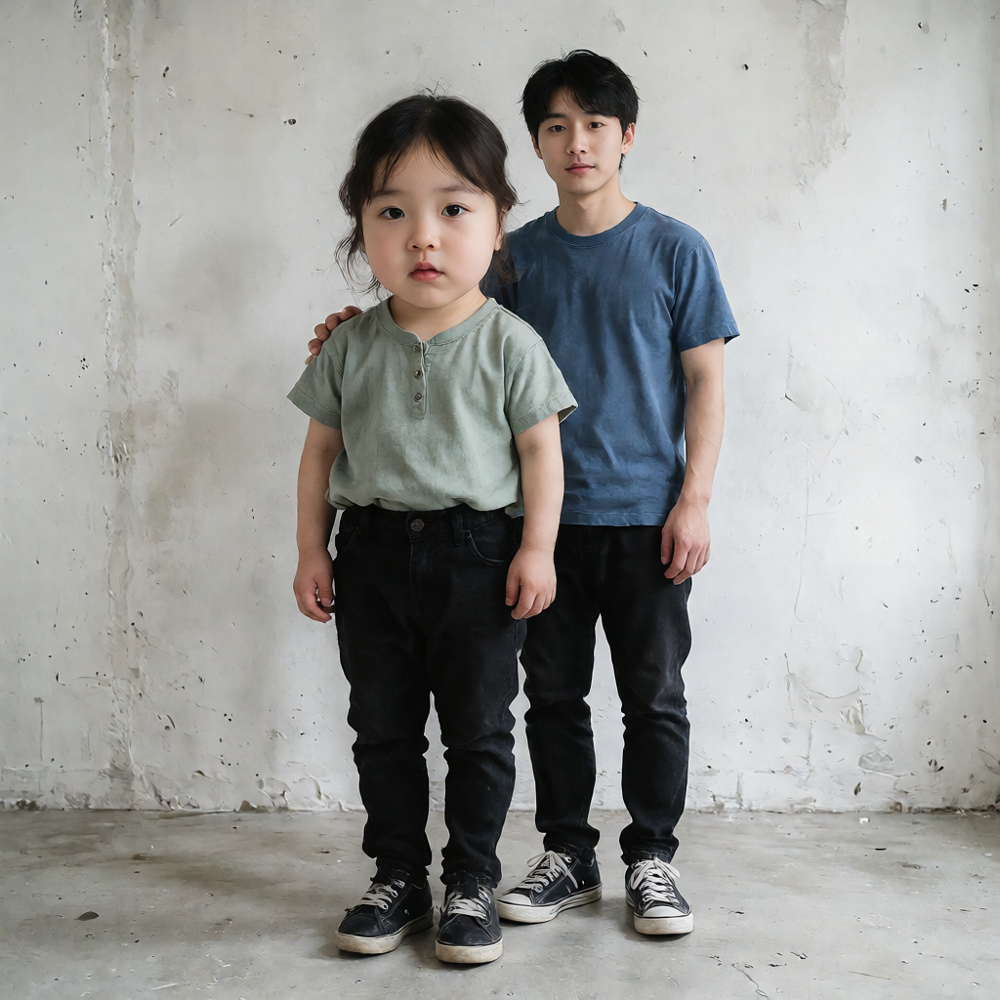
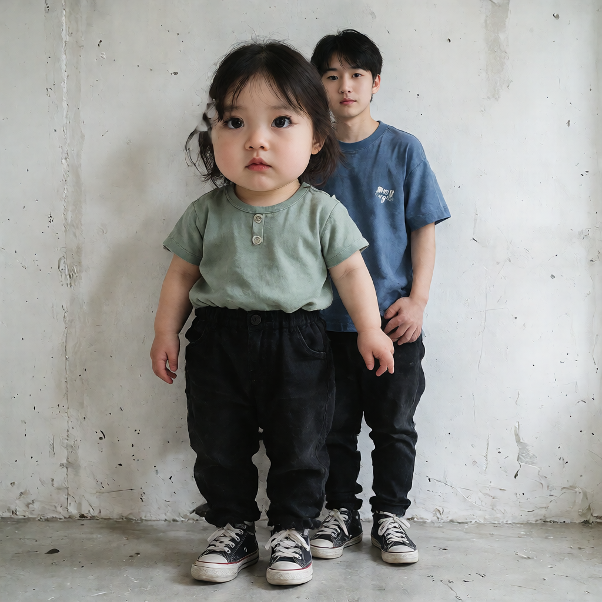
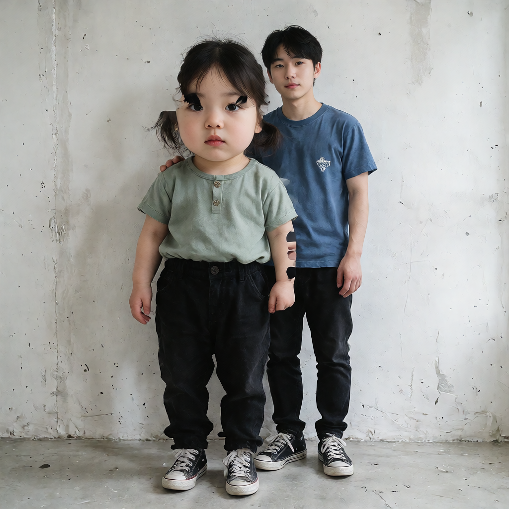
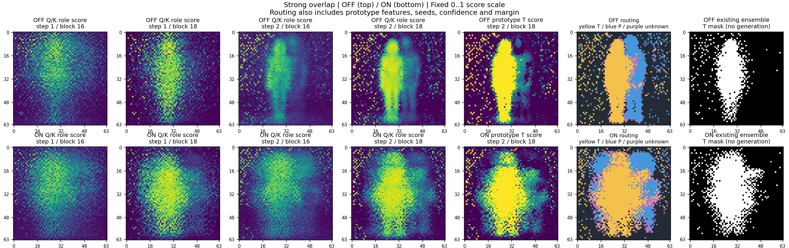

Sliderの有無によるmask収集比較
起動中のComfyUI / 公園 seed 444444・女性手前の重なり seed 42 / INT8 / Slider +4 / 1024×1024 / Euler・simple・8 steps・CFG 1
mask収集元は編集量・破綻に大きく影響した。Slider ONの単独採用は安定せず、対象maskの和集合＋元の保護maskが今回の2ケースでは目立つ欠損を避けた。全身の縮小と男性の完全保持を解決したとは言えない。
全4経路でk3 multi_proto_bg・収集step 2/block 18を固定。観測step [1,2]×block [16,18]。穴埋め・mask膨張・選択余白は0。変更点は収集時のSlider有無と、宣言したmask合成だけです。
全4suite・8編集bundleのfile/tensor hashを検査。元suiteから各編集のpartitionを再構成し、全stepのinside=Slider/outside=base選択に完全一致。各ケースの全経路で初回base予測・Slider予測も一致。実測136 NFE。
観察はCodexによる補助目視で、人の承認ではありません。独立labelによるmask精度、未見seed、独立no-hook parityは未検証です。画像の自然さと、目的の体格変化を分けて評価しています。
凍結条件 · 機械検証 · 実行一覧 · 補助目視 · 実ファイルSHA-256
| ケース | OFF対象 | ON対象 | 対象IoU | ON対象/OFF保護の衝突 | DのOFF比追加 | NFE / wall |
|---|
| park | 1046 | 697 | 0.421697 | 15 | 165 | 68 / 229.0s |
| woman_front_strong_overlap | 915 | 1350 | 0.510000 | 264 | 321 | 68 / 211.2s |
セル数とIoUは記述統計で、maskの正確さを表しません。wallはqueue単位で一度だけ計測しpolling遅延を含みます。
park / seed 444444
8ffa7522-fd7f-4539-a25a-c61ce45acc61 · 実投入API · history
A：Sliderなし収集
対象・保護ともSliderなしで収集
顔・頭部は強く若返るが、胴・脚の大きな縮小は控えめ。今回の対照。
対象 1046 / 保護 704 cells
診断JSON
実効maskを表示
B：Sliderあり収集
対象・保護ともSlider +4で収集
顔に背景へ抜けるような欠損・不連続があり、品質が悪化。
対象 697 / 保護 854 cells
診断JSON
実効maskを表示
C：ON対象＋OFF保護
ON対象からOFF保護を除外

OFF保護maskへ戻しても対象の顔の破綻は残る。
対象 682 / 保護 704 cells
診断JSON
実効maskを表示
D：対象の和集合＋OFF保護
OFF/ON対象の和集合からOFF保護を除外

B/Cの大きな顔欠損は解消。Aに対する全身縮小の明確な増強は確認できない。
対象 1211 / 保護 704 cells
診断JSON
実効maskを表示
補助目視：評価軸を分けた所見| 経路 | 対象の編集量・体格 | 破綻・輪郭 | 男性への影響 |
|---|
| A：Sliderなし収集 | 頭部が大きく若い顔つき。身長と脚の長さは相対的に残る。 | この全体表示では明らかな余分な顔・腕・脚は見当たらない。 | 男性には眼鏡があり、成人らしい顔・体格。これは候補間比較の基準で、OFFへの保持証明ではない。 |
| B：Sliderあり収集 | 顔周辺が破綻しており、編集達成を成功と判定できない。胴・脚は細長く、全身の縮小改善も明確でない。 | 頬・顎・首周辺が途切れ、顔の部分が背景色へ抜けるように見える。 | 男性の眼鏡と主要体格はAに近いが、顔と服の細部に差がある。 |
| C：ON対象＋OFF保護 | 対象の顔が部分的に欠損し、胴・脚は細長い。全身編集改善とは扱わない。 | 顔中央・頬・首付近に大きな不連続が残る。Bとは欠損の形が異なる。 | 男性の眼鏡と主要体格は近いが、顔つき・頭部位置に差がある。保護maskの一致は画素保持を意味しない。 |
| D：対象の和集合＋OFF保護 | 若い顔と大きな頭部は保たれる。服・脚・足元は変わるが、身長や四肢の大きな縮小がAより強まったとは判断しない。 | B/Cの顔欠損は見当たらない。明らかな余分な顔・腕・脚も、この全体表示では見当たらない。 | 男性の眼鏡、位置、主要体格はAに近い。顔・服・背景の細部は異なる。 |
Slider ONで収集maskは大きく変わるが、単独採用は顔の破綻を生んだ。ON対象＋OFF保護でも破綻が残り、対象maskの和集合で解消したため、対象選択範囲の欠落・切替が有力な説明。ただし独立mask labelがなく、欠落位置の正解や全身縮小の制約量は未確定。
元suiteと比較用mask
off suite manifest · 対象mask · 保護mask
on suite manifest · 対象mask · 保護mask
保存済みattentionスコアを比較

左4列は3役割で正規化したQ/Kスコア（全48 head平均）です。全tokenに対する本来のattention確率ではありません。5列目は特徴量prototypeを含めた最終候補スコア、6列目は実効routing、7列目は既存ensemble maskです。ensemble画像の生成は追加していません。
woman_front_strong_overlap / seed 42
3cf964b9-b9e2-4c38-99ff-238434fa210f · 実投入API · history
A：Sliderなし収集
対象・保護ともSliderなしで収集

頭部・顔は強く変わるが、胴・脚の変化は相対的に控えめ。前回k3/+4を再現。
対象 915 / 保護 642 cells
診断JSON
実効maskを表示
B：Sliderあり収集
対象・保護ともSlider +4で収集

対象の頭部・胴・腕の変化は強まるが、男性の顔・服も変わる。
対象 1350 / 保護 670 cells
診断JSON
実効maskを表示
C：ON対象＋OFF保護
ON対象からOFF保護を除外

元の保護maskへ戻すと、対象の目・髪・腕に目立つ欠損が出る。
対象 1086 / 保護 642 cells
診断JSON
実効maskを表示
D：対象の和集合＋OFF保護
OFF/ON対象の和集合からOFF保護を除外
Cの目立つ顔・腕の欠損が解消し、Aより頭身・体格の変化が強く見える。男性への差は残る。
対象 1236 / 保護 642 cells
診断JSON
実効maskを表示
補助目視：評価軸を分けた所見| 経路 | 対象の編集量・体格 | 破綻・輪郭 | 男性への影響 |
|---|
| A：Sliderなし収集 | 大きな頭部と若い顔つき。B/C/Dより腕や胴が細く、脚は相対的に長く見える。 | この全体表示では目立つ余分な顔・腕・脚は見当たらない。 | 男性は成人らしい顔つき、無地に近い青いシャツ。候補間の比較基準であり、OFFへの保持証明ではない。 |
| B：Sliderあり収集 | Aより大きな頭部、太く短く見える腕、丸みのある胴・脚。頭身の変化は強いが、身長の大幅な縮小は確認できない。 | 目が大きく形状も変わり、頭髪と背景の境界に不連続が見える。公園Bほどの顔中央の大きな欠損は見当たらない。 | 男性の顔つきがAより若く見え、服のロゴ、腕・手、主要な体格や位置にも差がある。 |
| C：ON対象＋OFF保護 | Aより頭部・胴・脚の変化は強いが、欠損のため品質改善と判定しない。 | 両目の上部・頭髪付近と、画像右側の対象腕に黒い切替・欠損のような不連続がある。 | 男性の主要な配置・体格はAに近づくが、顔と服のロゴは異なる。 |
| D：対象の和集合＋OFF保護 | Aより大きな頭部、太く短く見える腕、丸い胴・脚となる。身長の大幅な縮小を達成したとは判断しない。 | Cの目・髪・腕の大きな黒い欠損は見当たらない。対象の手首に腕時計のような新しい要素がある。細部品質の人による確認は未実施。 | 男性の主要配置・体格はAに近いが、顔と服のロゴが変わる。保護mask一致でも最終画像の完全保持ではない。 |
Slider ONの収集で対象・保護maskが大きく変わった。保護maskの元の範囲を維持するCだけでは新しい対象形状と衝突し、Dの和集合で目立つ欠損が解消した。mask収集元と合成方法が編集量・破綻へ影響することは支持されるが、Sliderなし収集が弱い変化の唯一原因とは確定できない。
元suiteと比較用mask
off suite manifest · 対象mask · 保護mask
on suite manifest · 対象mask · 保護mask
保存済みattentionスコアを比較

左4列は3役割で正規化したQ/Kスコア（全48 head平均）です。全tokenに対する本来のattention確率ではありません。5列目は特徴量prototypeを含めた最終候補スコア、6列目は実効routing、7列目は既存ensemble maskです。ensemble画像の生成は追加していません。
顔中心付近の抜け：blockだけでなくstep・head・分類も関係
今回のmulti_proto_bgはstep 2 / block 18だけからmaskを作ります。保存された4tap全体は平均されていません。公園ONの対象maskの最大の閉じた穴は70セル（grid bbox [17,17,28,28]）で、62セルがprotected、8セルがuncertain backgroundです。独立した顔labelではなく、mask内の穴についての記述です。
| step / block | 対象Q/Kスコア平均 | 保護Q/Kスコア平均 | 穴領域平均で対象が最大のhead |
|---|
| 1 / 16 | 0.5419 | 0.3628 | 20 / 48 |
| 1 / 18 | 0.7115 | 0.2805 | 38 / 48 |
| 2 / 16 | 0.3820 | 0.5402 | 12 / 48 |
| 2 / 18 | 0.3721 | 0.6197 | 12 / 48 |
同じblock 18でもstep 1では対象優勢、step 2では保護優勢に変わります。step 2/block 18にも対象を強く捉えるheadは残っています。最終prototypeスコアでは穴領域の対象平均0.1538、保護平均0.8455となり、62セルが保護側へ分類されます。単なる閾値不足や『blockに顔情報がない』だけでは説明しきれません。
次の切り分け候補はstep選択、head集約、prototypeによる人物間競合です。この2 seedの結果からheadやblockを選ぶとtuningになるため、選んだ設定の一般化は別seedで確認が必要です。
穴領域の全head診断 · 閉じた穴の分類
既存配布workflowのclassic mask方式／選択余白4をそのまま実行した結果ではありません。前回attention ablationとの比較を保つため、既存nodeでk3方式／余白0のAPIコピーを組みました。元workflow・Sampler実装は変更していません。
Slider ONの収集は、入力MODELに通常LoaderでSlider +4を適用しています。collector自身が新たなSliderを足す処理はありません。本生成の入力は全経路でstyleのみのMODELです。
収集suiteに独立した完成OFF/all参照画像はありません。男性への所見は候補間の比較であり、未編集画像への完全保持を証明しません。